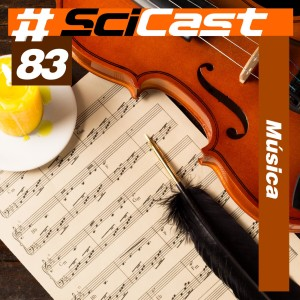
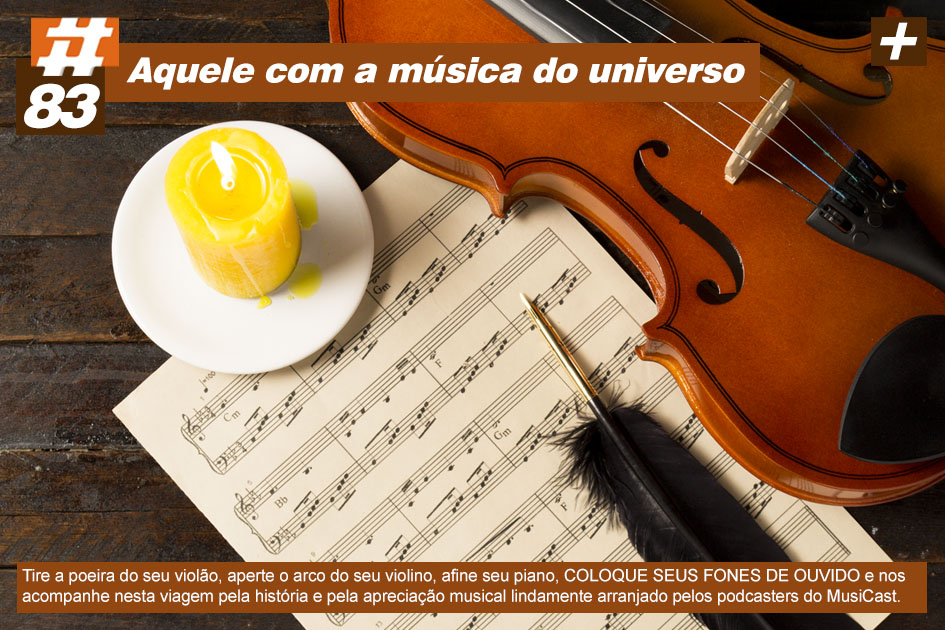
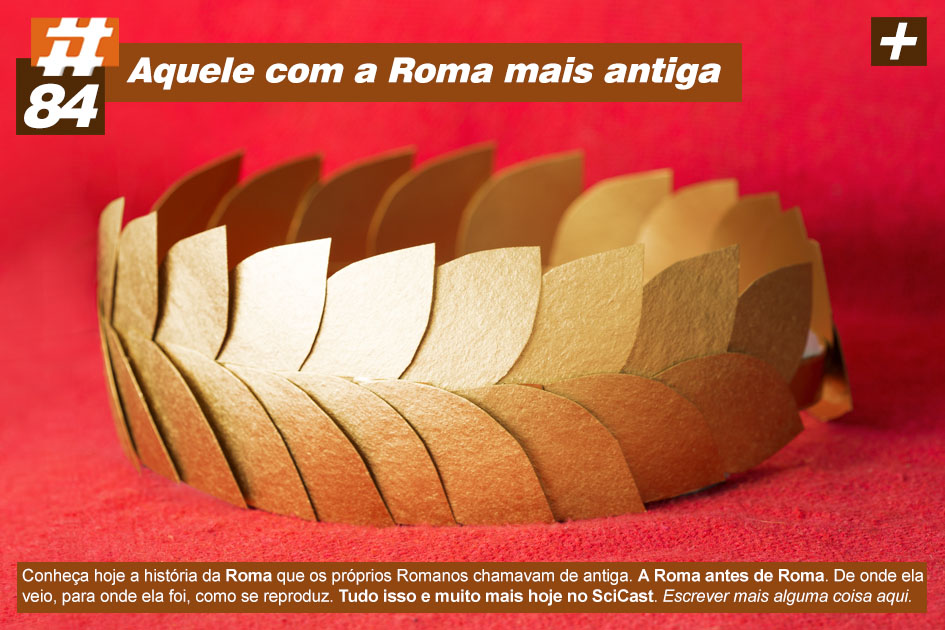
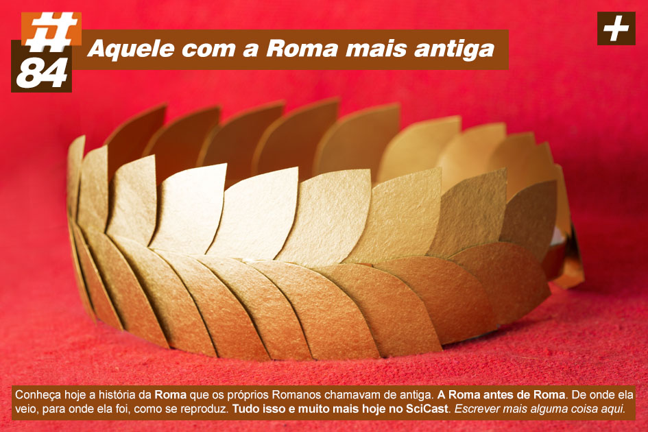
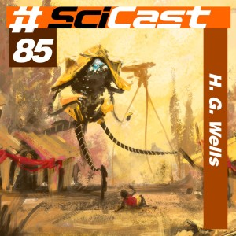
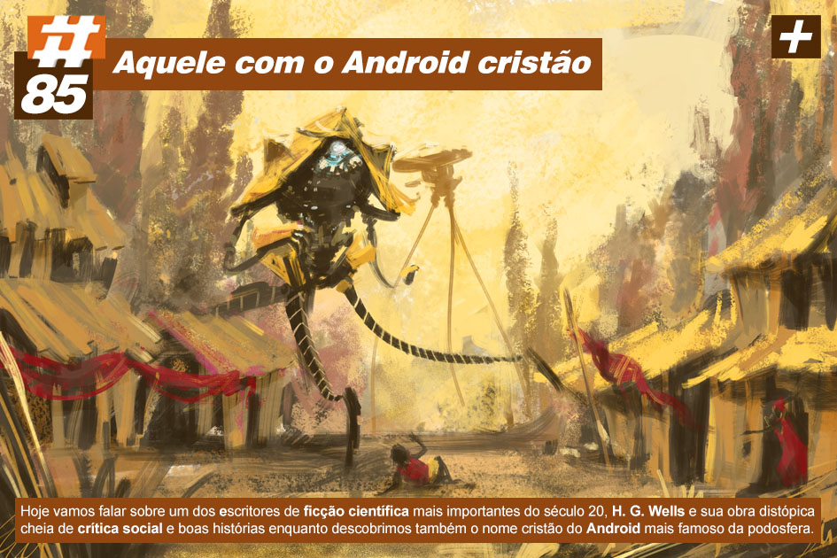

Galeria de fotos
- #83: Música. Podemos definir a música como a arte de produzir efeitos estéticos através de fenômenos acústicos. A música, como arte, é uma forma de produzir ou transmitir o que é belo...
 #84: A Ascensão de Roma. Quem tem boca vai a roma! E quem tem ouvido vai ao SciCast! (Ou faz os dois e vai a roma ouvindo o SciCast, sei lá a vida é sua)...
#84: A Ascensão de Roma. Quem tem boca vai a roma! E quem tem ouvido vai ao SciCast! (Ou faz os dois e vai a roma ouvindo o SciCast, sei lá a vida é sua)...
- #85: H.G. Wells. Por que não devemos combater a gripe? Como ficar invisível? Para que raios viajar no tempo? As regras do criquet? Como criar seres meio-homem meio-comentarista de portal de noticias?...

 #86: Arquitetura de Computadores. Para compreendermos o mundo percebemos que teríamos que contar as coisas...
#86: Arquitetura de Computadores. Para compreendermos o mundo percebemos que teríamos que contar as coisas...

 #87: Próteses. Convidamos o Dr. Divago e sua linda noiva, Fruna, para conversarmos sobre como já conseguimos ser super ciborgues com habilidades extraordinárias como… pegar um copo...
#87: Próteses. Convidamos o Dr. Divago e sua linda noiva, Fruna, para conversarmos sobre como já conseguimos ser super ciborgues com habilidades extraordinárias como… pegar um copo...

 #88: Pensamento Científico. Queridos ouvintes, vocês já devem ter aprendido muita coisa com o SciCast, de Energia Nuclear, Memória e Eletricidade até Origem da Vida e Petróleo. Ou seja, passamos para vocês informações científicas das mais diversas áreas de maneira descontraída e interessante...
#88: Pensamento Científico. Queridos ouvintes, vocês já devem ter aprendido muita coisa com o SciCast, de Energia Nuclear, Memória e Eletricidade até Origem da Vida e Petróleo. Ou seja, passamos para vocês informações científicas das mais diversas áreas de maneira descontraída e interessante...

 #89: Célula. Atualmente estão descritos aproximadamente quatro bilhões de seres vivos, entre protozoários, bactérias, plantas e animais. Embora todos esses organismos possuam características diferentes, todos apresentam a mesma unidade básica: a célula...
#89: Célula. Atualmente estão descritos aproximadamente quatro bilhões de seres vivos, entre protozoários, bactérias, plantas e animais. Embora todos esses organismos possuam características diferentes, todos apresentam a mesma unidade básica: a célula...

 #90: Redes de Computadores. A onipresença da internet nas sociedades contemporâneas tem gerado uma corrida desenfreada de empresas dos mais diversos perfis no sentido de ocupar um lugar no emaranhado de interações que se dão cotidianamente nesse espaço...
#90: Redes de Computadores. A onipresença da internet nas sociedades contemporâneas tem gerado uma corrida desenfreada de empresas dos mais diversos perfis no sentido de ocupar um lugar no emaranhado de interações que se dão cotidianamente nesse espaço...

 #91: Lixo. Boa parte dos atos que a humanidade pratica cotidianamente sem pensar é seguida de outro gesto automático: sobrou, jogou fora...
#91: Lixo. Boa parte dos atos que a humanidade pratica cotidianamente sem pensar é seguida de outro gesto automático: sobrou, jogou fora...

 #92: Aspectos Sociais dos Jogos Online. Fala galera! Essa semana o SciCast, o seu podcast favorito de joguinhos ciência vai falar sobre um tema muito pedido!...
#92: Aspectos Sociais dos Jogos Online. Fala galera! Essa semana o SciCast, o seu podcast favorito de joguinhos ciência vai falar sobre um tema muito pedido!...

 #93: Hiroshima. Neste episódio especial dividido em duas partes, prestamos homenagem às vítimas dos ataques nucleares às cidades japonesas de Hiroshima e Nagasaki, realizados 70 anos atrás...
#93: Hiroshima. Neste episódio especial dividido em duas partes, prestamos homenagem às vítimas dos ataques nucleares às cidades japonesas de Hiroshima e Nagasaki, realizados 70 anos atrás...

 #94: Nagasaki. E nesta segunda parte desse especial, continuamos a discutir sobre os caminhos que levaram ao desenvolvimento e uso das bombas atômicas...
#94: Nagasaki. E nesta segunda parte desse especial, continuamos a discutir sobre os caminhos que levaram ao desenvolvimento e uso das bombas atômicas...

 #95: China Antiga. Tentar falar de culturas tão distantes da nossa sempre é um desafio, um desafio que também atinge os pesquisadores...
#95: China Antiga. Tentar falar de culturas tão distantes da nossa sempre é um desafio, um desafio que também atinge os pesquisadores...


Senac-RS